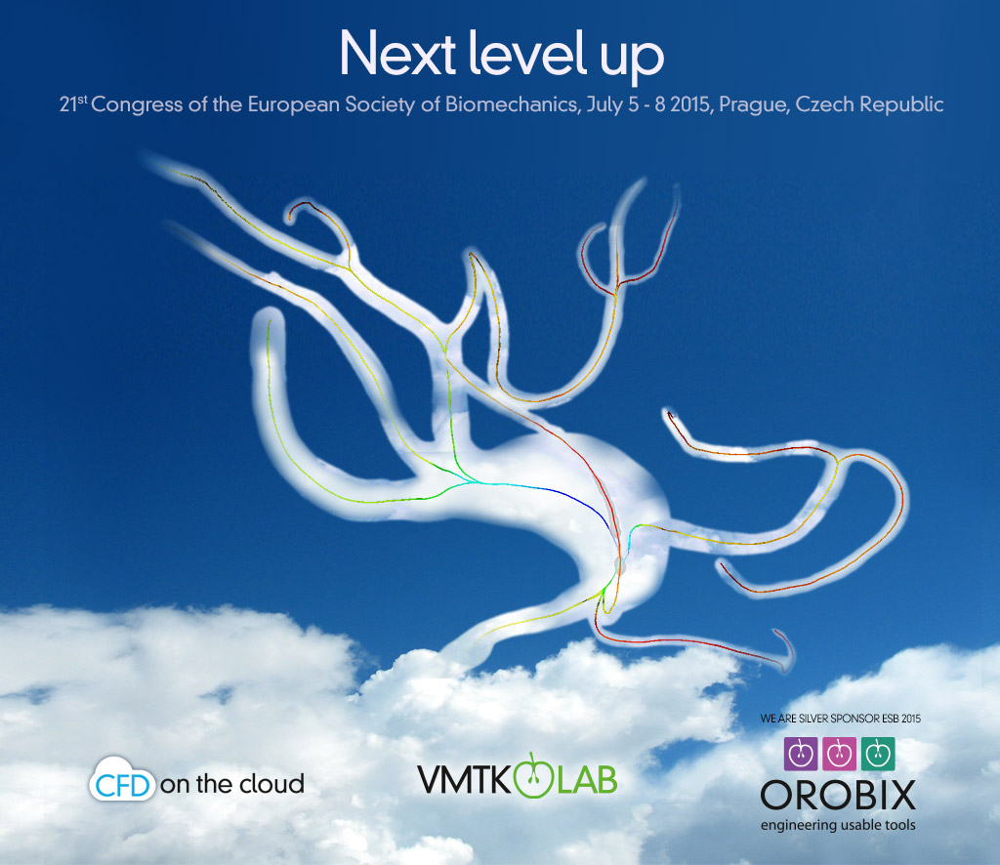
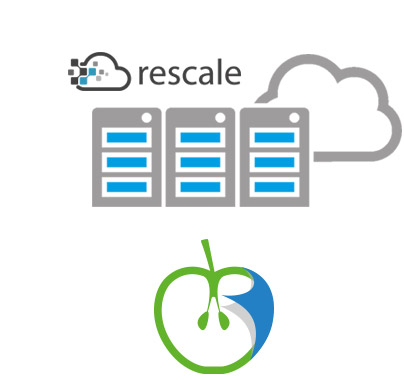
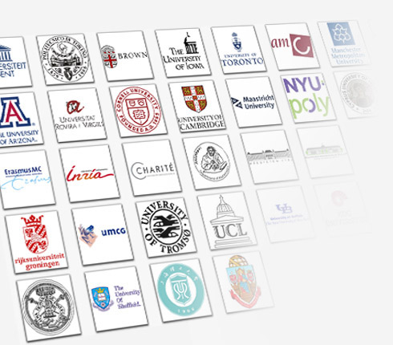

VMTKLab integrates
with the Rescale platform to provide
CFD simulations on the cloud.
VMTKLab, our graphical, workflow-oriented application
for image-based modeling, takes it to the next level
with two new modules, volume meshing and CFD on the cloud.
Thanks to a partnership between Orobix and Rescale,
a leading high-performance cloud computing provider,
our users will be able to run CFD simulations at scale,
covering the needs of basic research and large-scale
clinical studies alike.

More than 30 institutions and universities
around the world adopt VMTKLab
for their research and education.
Since its launch six months ago, VMTKLab has brought image
segmentation, geometric analysis and surface mesh generation
to the fingertips of individual researchers and students
with its easy-to-use workflows. Through a partnership programme
established during the last few months, more than 30 institutions
and universities around the world have decided to adopt
VMTKLab for their research and education.
Orobix SILVER SPONSOR at ESB 2015
Orobix is a dynamic company at the forefront of image analysis,
machine learning, numerical modeling and software engineering,
providing its expertise to research institutions and healthcare
and pharma industries.
For years Orobix has been actively supporting the bioengineering
community through the development of the open source
Vascular Modeling Toolkit (vmtk.org), which has now become one
of the standard tools in image-based modeling research.
Visit our booth and take
a peek at our technologies.
Have a specific need for a research project or a medical device?
Orobix is there to provide its skills on image analysis,
machine learning, numerical modeling and software engineering.
Feel free to contact us at
info@orobix.com.
See you at ESB